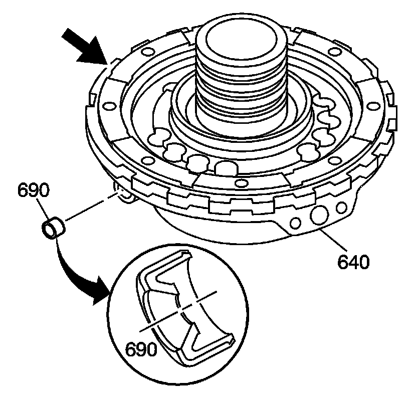
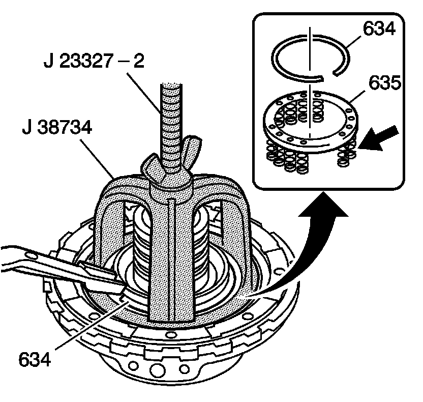
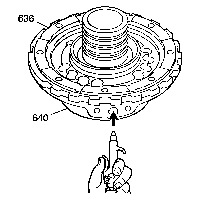
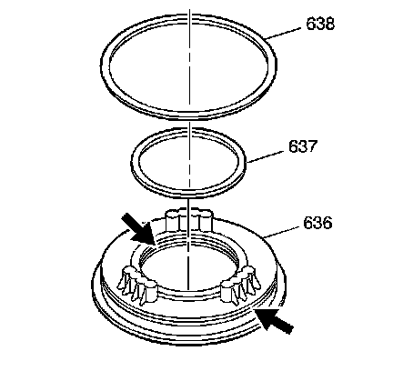
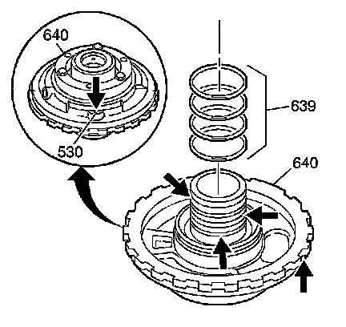

Center Support Assembly Disassemble
Center Support Assembly Disassemble
Tools Required
^ J 23327 Clutch Spring Compressor
^ J 38734 Intermediate Spring Compressor Adapter

1. Remove the oil cooler pipe fitting seal (690) from the center support assembly (640).
2. Inspect the center support assembly (640) for damage.

3. Using the J 23327 and the J 38734, compress the intermediate clutch spring assembly (635).
4. Remove the intermediate clutch spring retainer ring (634).
5. Remove the J 23327 and the J 38734.
6. Remove the intermediate clutch spring assembly (635).
7. Inspect the intermediate clutch spring assembly (635) for collapsed coils and distortion.

8. Remove the intermediate clutch piston (636). Apply compressed air to the center support bolt hole to aid in piston removal.

9. Remove the inner seal (637) and outer seal (638) from the intermediate clutch piston (636).
10. Inspect the intermediate clutch piston (636) for cracks and damage.

11. Remove the direct clutch housing oil seal rings (639) from the center support assembly hub.
Important: Do not disassemble the roller clutch race from the center support assembly (640). If a new center support assembly (640) is required, the support will come with a roller clutch race already installed.
12. Inspect the center support intermediate clutch orifice (530).
This needs to be open approximately 0.51 mm (0.020 in).
13. Inspect the oil seal ring pockets for damage.